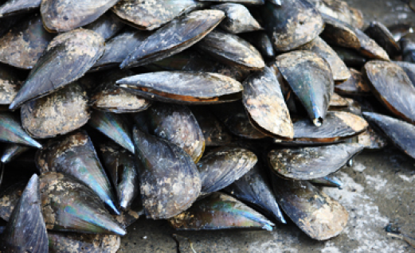
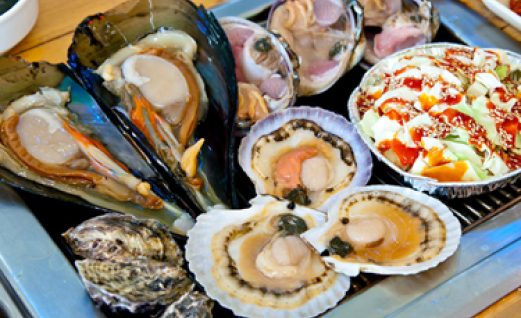

2022年保宁访问年介绍
-
总是令人兴奋!
2022年保宁访问年介绍
为营造官方认可的国际性活动——2022保宁海洋泥浆博览会(7月16 日至8月15日)的宣传氛围，并以韩国国内最长的保宁海底隧道开通 为契机，开启保宁市旅游业腾飞元年，并宣布2022年为保宁访问 年

-
保宁
2保宁海洋泥浆博览会
2022. 07. 16. ~ 2022. 08. 15.


保宁九景+
MORE-

大川海水浴场
东方唯一的贝壳粉(贝壳)海滩 白沙滩四季庆典现场 查看详情
-

- 竹岛(尚和园)
由于岛内竹林茂密 因此被称为竹岛
-

圣住山自然休养林
圣住山自然休养林 车岭山脉绽放的无限魅力 在绿树成荫的溪谷中静享的森林浴
-
开花艺术公园
由香草乐园、音乐堂、碑林公园、 MOSAN美术馆等构成的大型艺术综合园区
-

武昌浦海水浴场
同时享受海水浴和森林浴 创造摩西奇迹的武昌浦海滨路
-

外烟岛d
犹如一军统帅护卫周边群岛 形成宜人夜景的外烟岛
-

忠清水营城s
为抵御从西海入侵的外敌 用石头堆积建造的石城
-

冷风浴场
随着外部温度的上升 更加清凉的废矿自然风
-
保宁湖
一边欣赏秀丽的周边风景和碧绿的湖水 一边开车兜风的保宁湖
-

乌栖山
犹如水彩画般铺展开的紫芒浪潮 在山顶上观赏的西海夕阳
保宁九味
MORE-

川北烤牡蛎
川北地区盛产牡蛎，由于潮水涨落差异较大，川北牡蛎生长缓慢，但味道鲜美，营养尤其丰富。冬天用炭火烤来吃可以驱走冬季的寒冷。
-

沙岘葡萄
蓝浦面沙岘里有最适合栽培葡萄的土壤，这里生产的葡萄全国糖度最高，香气浓郁，受到消费者们的青睐，采用减少农药使用次数的先进栽培技术，提前20天左右便可收获。
-

小章鱼
蘸上辣椒酱一口一个，口感筋道越嚼越香，也可以炒着吃、拌着吃、炖着吃。
-

凉拌比目鱼
用西海刚刚捕捉上来的新鲜比目鱼加上黄瓜、芝麻等各种调料凉拌，味道筋道酸甜可口，受到全国许多美食家的喜爱。
-

螃蟹汤
螃蟹是低脂肪高蛋白的营养食品，易于消化，味道鲜美。富含人体必需的氨基酸，尤其适合正在长身体的孩子、体质虚弱的人以及老年人食用，除了螃蟹汤还可以品尝到蟹酱和蒸螃蟹等美食。
-

保宁岩海苔
精选西海岸无污染地区盛产的最上级原料制成，可以长期保持香酥可口的味道。
-

牛角蛤料理
牛角蛤含有大量的蛋白质，热量低，并富含人体必需的氨基酸和铁等营养成分，对预防贫血、动脉硬化和产妇坐月子、皮肤美容有很好的效果，可以烤着吃、炖着吃、拌着吃、涮着吃、煮粥，或者炸着吃。
-

烤扇贝
扇贝、猕猴桃、海螺、虾、泥蚶、鲍鱼等保宁产出的新鲜贝壳和各种海鲜，在烤架上直接烤着吃，可以品尝到各种新鲜的海鲜。
-

海鲜刀切面
多种海鲜增加了大海的香气，还增加了吃劲道的面条的乐趣。 爽口的汤水和清爽的味道，让男女老少都能吃得健康美味。